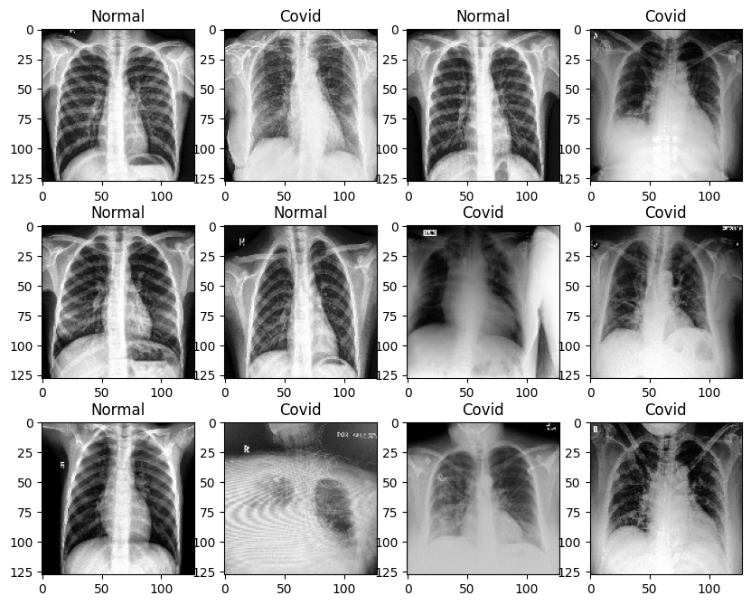
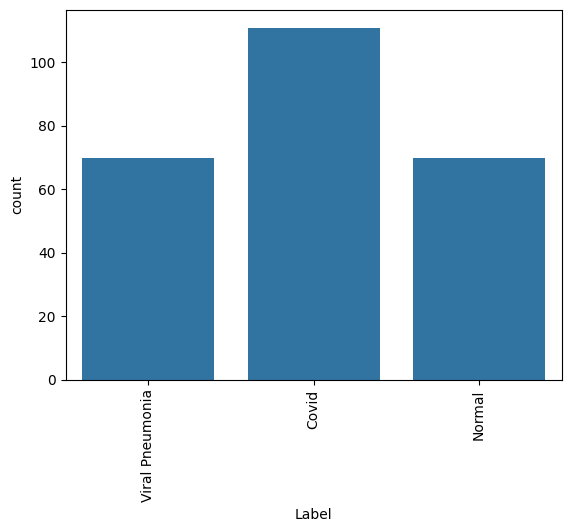
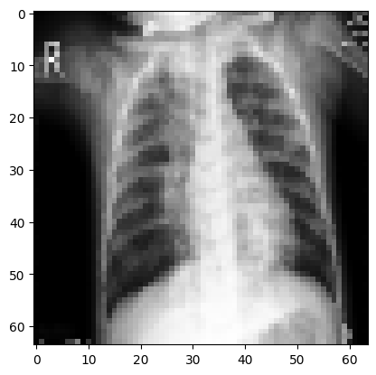
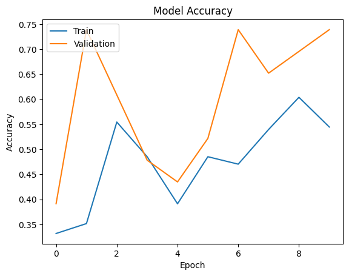
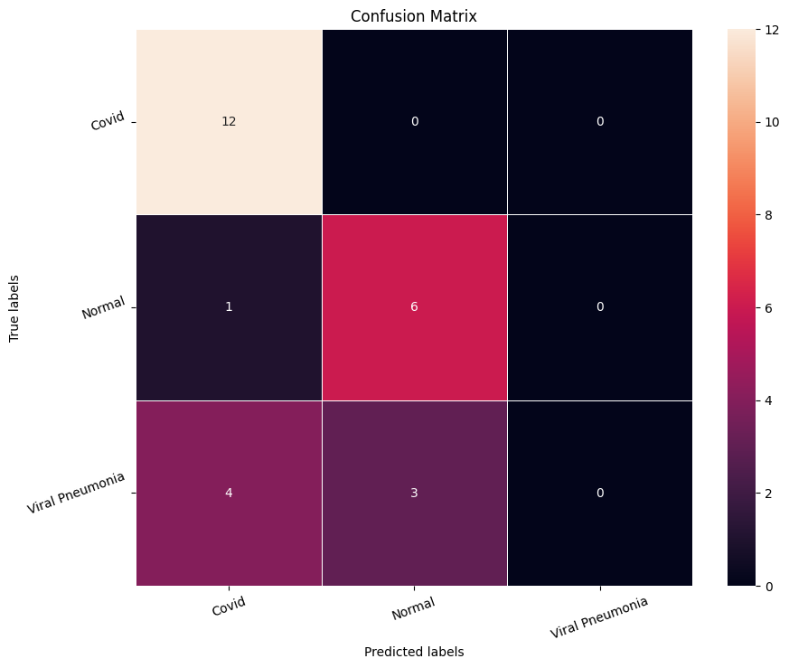
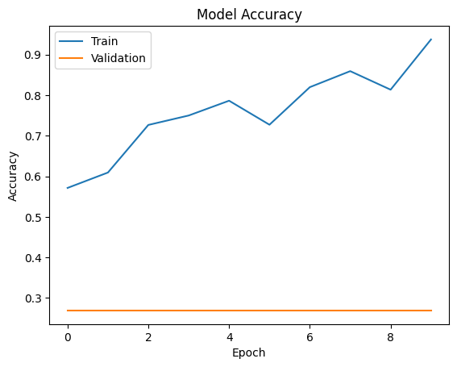
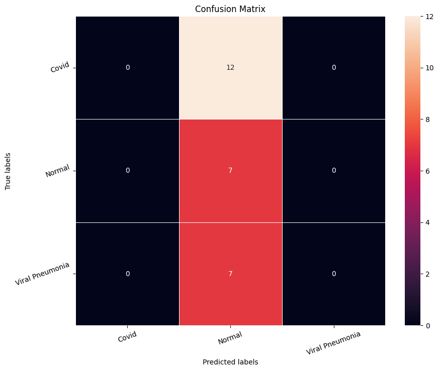
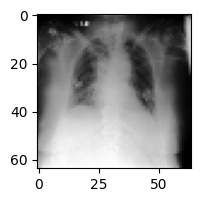
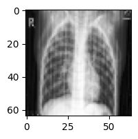
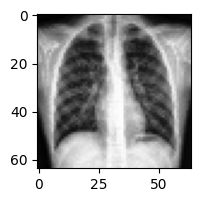

Overview
We taught a computer to look at a chest X-ray and flag whether it looks like COVID, normal lungs, or another type of pneumonia.
- COVID-19 spread faster than radiologists could read scans, creating demand for fast automated triage support.
- Goal: classify each chest X-ray into one of three categories - COVID, Normal, or Viral Pneumonia.
- Framed as a decision-aid that prioritizes and flags scans for clinicians, not as a standalone diagnosis.
- Class imbalance matters here, so the model is judged on Precision and Recall, not accuracy alone.
- Misses are asymmetric: calling a true COVID case 'Normal' is the costly error we most want to avoid.
Methodology
flowchart LR A[Image Dataset] --> B[Resize / Normalize / Augment] B --> C["CNN: Conv + Pooling layers"] C --> D[Dense + Softmax] D --> E[Train w/ Early Stopping] E --> F["Evaluate: Accuracy and Confusion Matrix"]
The Data (X-ray Images)
We started with a few hundred labeled chest X-ray pictures, each already tagged with its true condition.
- 251 labeled chest X-ray images stored as a 4-D NumPy array of pixel intensities.
- Each image arrives at 128x128 pixels across 3 color channels.
- Three target classes: COVID, Normal, and Viral Pneumonia.
- Data is mildly imbalanced - the COVID category has somewhat more images than the other two.
- Imbalance drove the choice of Precision/Recall as the primary evaluation metrics.


Sample Images & Preprocessing
We shrank every X-ray to a smaller size and put all the pixel values on the same scale so the model could learn efficiently.
- Visualized random samples by converting NumPy arrays back to images with Matplotlib imshow.
- Resized images from 128x128 down to 64x64 to cut training cost on the small dataset.
- Split 90% train / 10% test (225 training, 26 test images) via scikit-learn train_test_split.
- Normalized pixels by dividing by 255 so all values fall in the 0-1 range.
- One-hot encoded the 3 labels to match a 3-neuron Softmax output layer.

CNN Architecture
The model is built from layers that scan the X-ray for patterns, then a final layer that votes on the most likely condition.
- Sequential CNN: feature-extraction conv/pool layers feeding fully-connected classification layers.
- Base model used two Conv2D layers (128 then 64 filters, 3x3) with MaxPooling, Dropout, and ~208K params.
- Softmax output of 3 neurons returns a probability for each class.
- Base model underfit, so a second model added BatchNormalization, data augmentation, and ReduceLROnPlateau.
- Finally tested VGG16 transfer learning (ImageNet weights, frozen base) with custom Dense 256/128 head.

Results & Accuracy
The first simple model guessed poorly, but adding tricks and a pre-trained network made the predictions much more reliable.
- Base CNN was unstable, with both training and validation accuracy stuck around 50% - it underfit the data.
- Confusion matrix showed Normal and Viral Pneumonia frequently misclassified into each other.
- Augmented model trended up to ~85-93% training accuracy but sometimes mislabeled COVID cases as Normal - unacceptable.
- VGG16 transfer-learning model was the best, predicting most classes correctly with minimum misclassifications.
- Sample predictions confirmed the stronger models labeled held-out X-rays correctly and generalized better.


Key Takeaways
Pre-trained image networks gave the best, most trustworthy results, but a tool like this should support doctors rather than replace them.
- CNNs preserve the spatial structure of images and beat flattening-based ANN/ML approaches on X-rays.
- Transfer learning (VGG16) plus data augmentation delivered the strongest, most generalized model.
- On medical data, a false 'Normal' for a true COVID case is potentially fatal - recall is the metric that matters.
- Position the model as a triage decision-aid for radiologists, never as an autonomous diagnosis.
- Built with: TensorFlow, Keras, scikit-learn, NumPy, pandas, OpenCV, Matplotlib, Seaborn.
More Visualizations




Tech Stack
- pandas — data wrangling and tabular manipulation
- numpy — fast numerical arrays
- scikit-learn — modeling, pipelines, and evaluation
- seaborn — statistical visualization
- matplotlib — plotting
- tensorflow — deep-learning framework
- keras — high-level neural-network API
Attribution
This project was completed as part of the MIT Applied Data Science Program (MIT IDSS / Great Learning). The program provided the case-study scaffolding; the analysis, code, and results are my own. Published with permission, for portfolio use only.